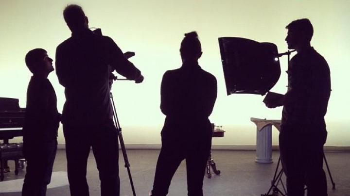
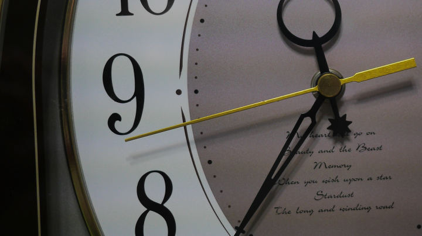
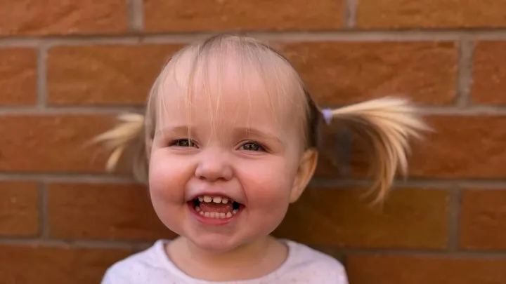
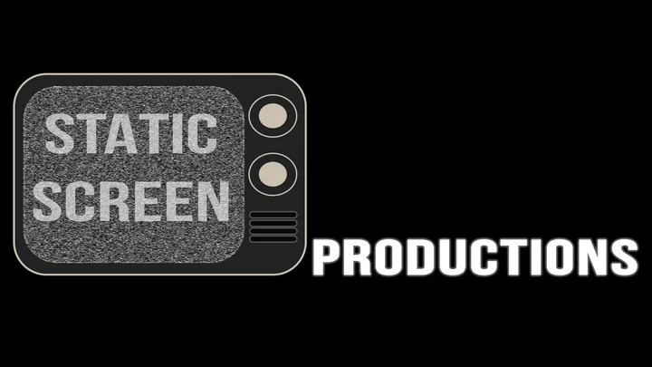
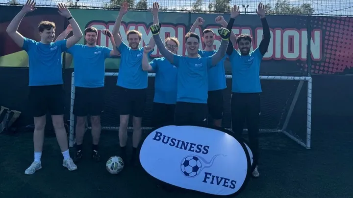
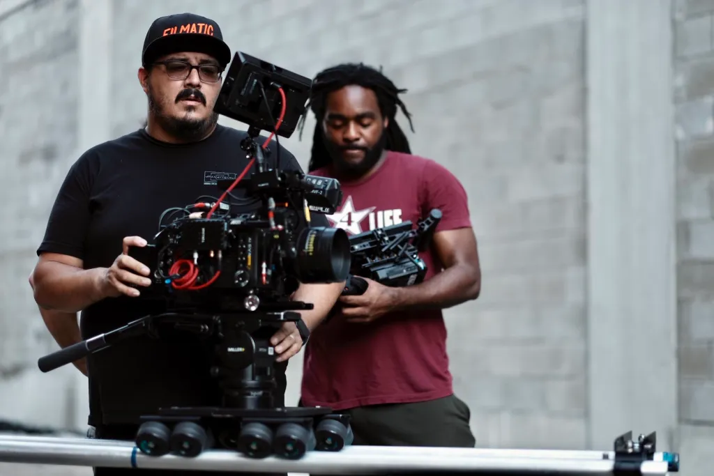
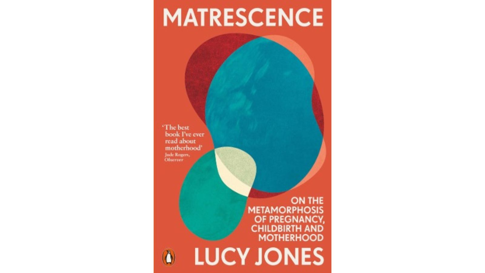
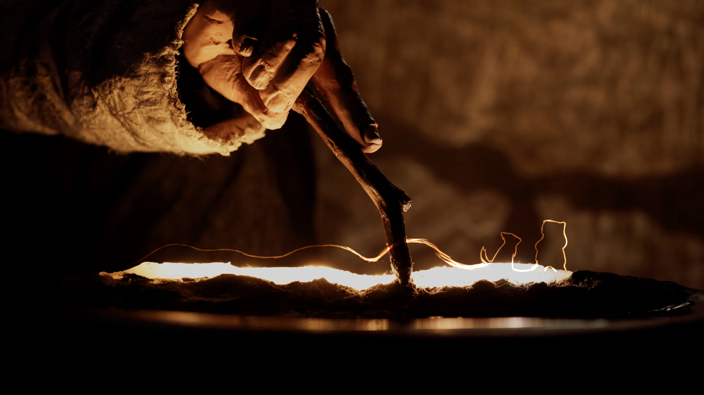

Real Creators. Real Results.
Click any campaign to view the live project.
Kickstarter & Indiegogo
Over 55,000 backers supported across massive product launches.

INDIEGOGO
Misen Dutch Oven
$4,964,374 Raised
42,996 Backers
Leveraged targeted ads and community management to turn a cookware classic into a massive Indiegogo phenomenon.

INDIEGOGO
Timemore Grinder
S$6,855,991 Raised
11,035 Backers
Built a high-converting landing page and executed a video-first ad campaign for coffee enthusiasts.

KICKSTARTER
DC Green Lantern
$1,337,480 Raised
4,994 Backers
Deep community engagement and targeted tabletop ads built massive momentum, unlocking all 68 stretch goals.

KICKSTARTER
URXR Spatial Glasses
$1,378,069 Raised
1,672 Backers
A highly optimized pre-launch VIP list and press release strategy helped URXR dominate the Wearables category.

INDIEGOGO
Zendure SuperBase V
$5,438,805 Raised
1,193 Backers
Focused on high-ticket backers and long-term investor relations to drive over $5.4M in funding.

KICKSTARTER
X1 Lite Laser
HK$ 10.2M Raised
441 Backers
Aggressive live-campaign ad management drove high-ticket pledges, resulting in over HK$ 10M raised.
Seed&Spark Campaigns
Supporting independent filmmakers and storytellers.

SEED&SPARK
A Short Film in 168 Hours
A collaborative film project born from the 168 Film Project, combining top Texas teams to compete for a grand prize.

SEED&SPARK
Rez
A record-breaking campaign funded in just 72 hours. This Spike Lee grantee tells the story of an Ojibwe teen on the Leech Lake reservation.

SEED&SPARK
Precious Time
An independent film campaign utilizing Seed&Spark's unique WishList and crowdfunding model for filmmakers.
GoFundMe Campaigns
Helping creators and communities rally support for their causes.

GOFUNDME
For Our Little Lila
A heartfelt campaign to support a young girl's medical journey.

GOFUNDME
Arthur's Student Film
Helping a student filmmaker secure the budget needed to bring a short film to life.

GOFUNDME
AquaTerra Charity Football
A community-driven charity tournament raising funds for Macmillan Cancer Support.
Grant-Funded Films
Examples of independent films brought to life through grant funding.

NEA GRANT
Cascarita
$30,000 NEA Grant
A documentary exploring how soccer shapes community life in Houston, supported by the National Endowment for the Arts.

SUNDANCE FUND
Matrescence
Sundance Doc Fund Grant
A feature documentary exploring the physical and psychological changes of motherhood, backed by Sundance Institute.

SUNDANCE FUND
Ancestors
Sundance Doc Fund Grant
A documentary following tribal repatriation specialists fighting to return Indigenous remains, supported by Sundance Institute.